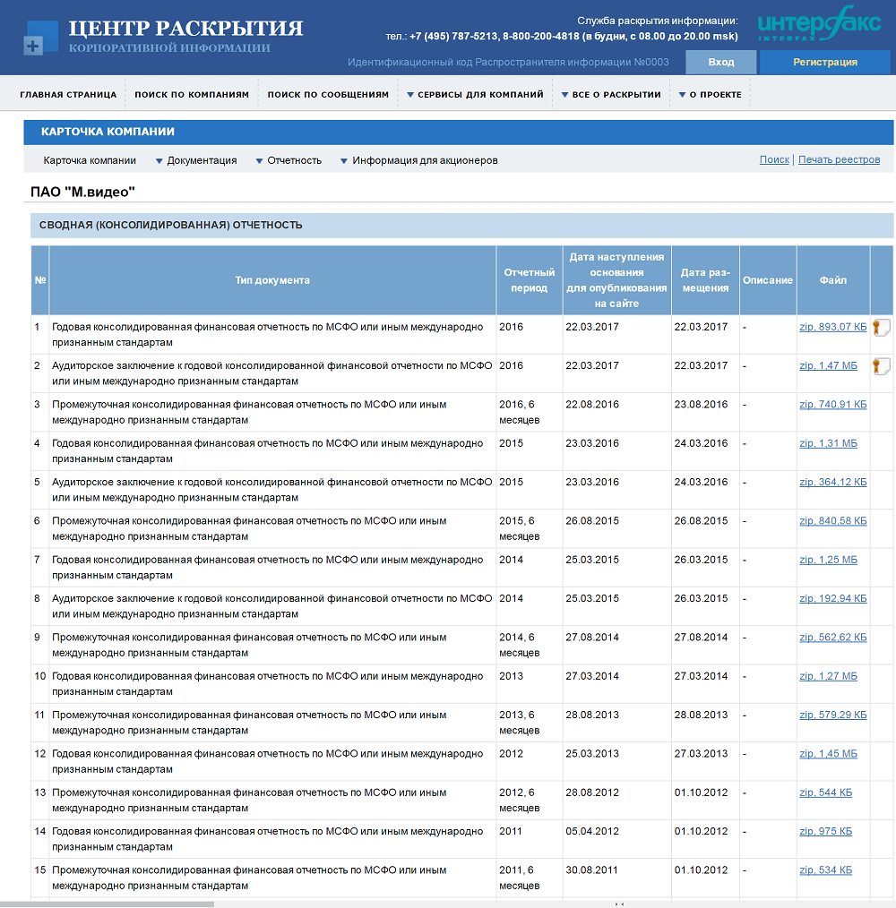
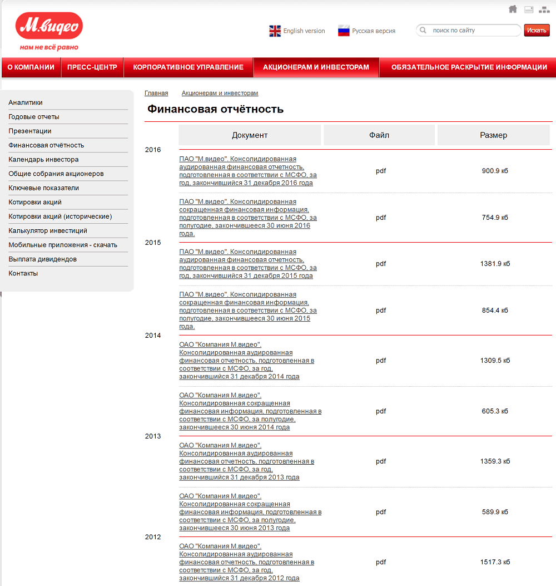
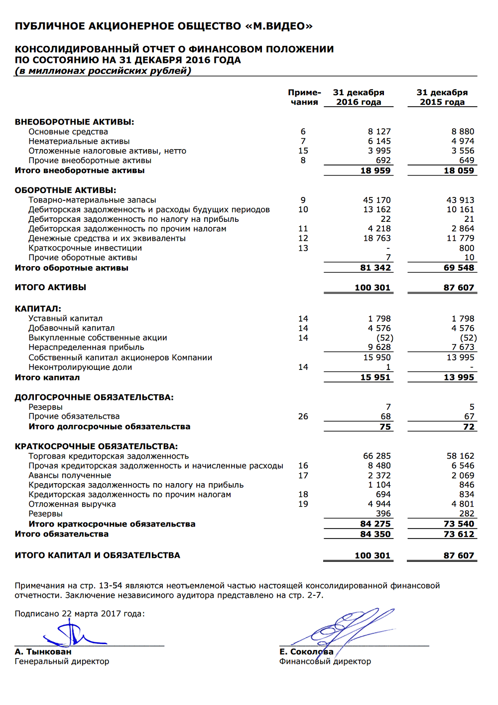
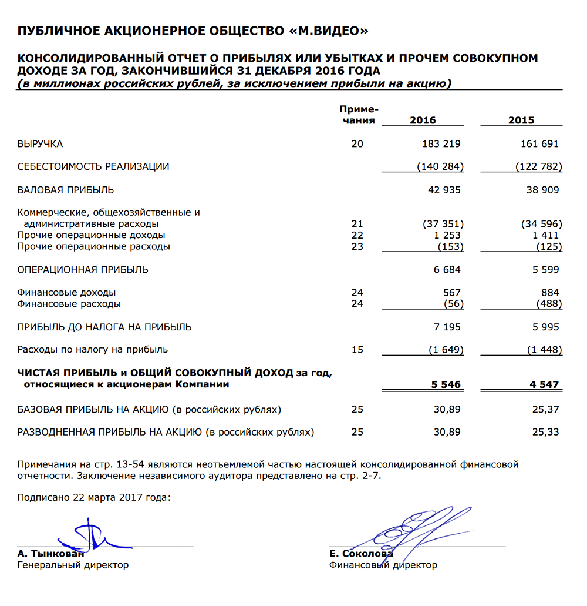
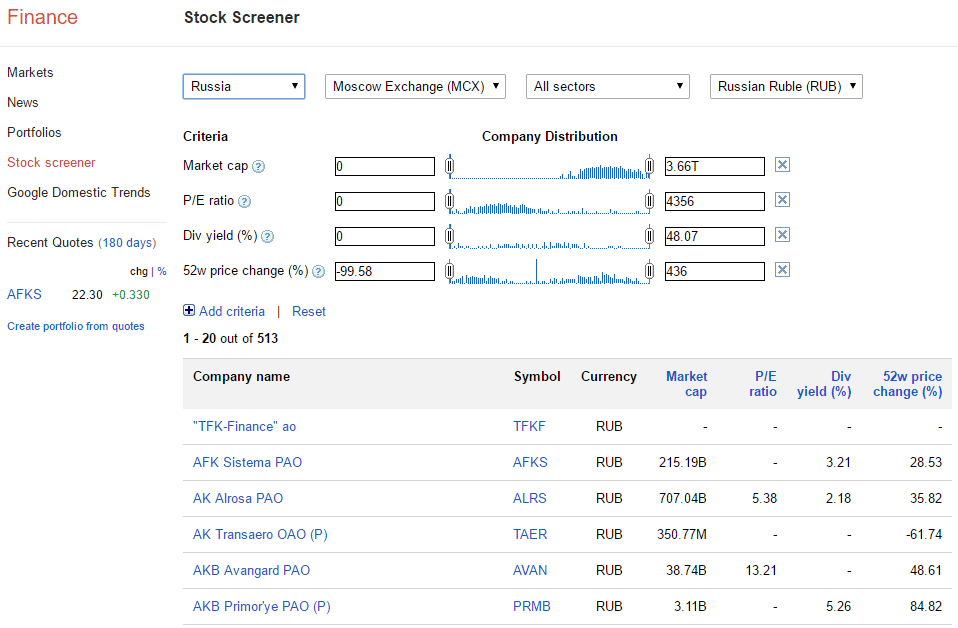
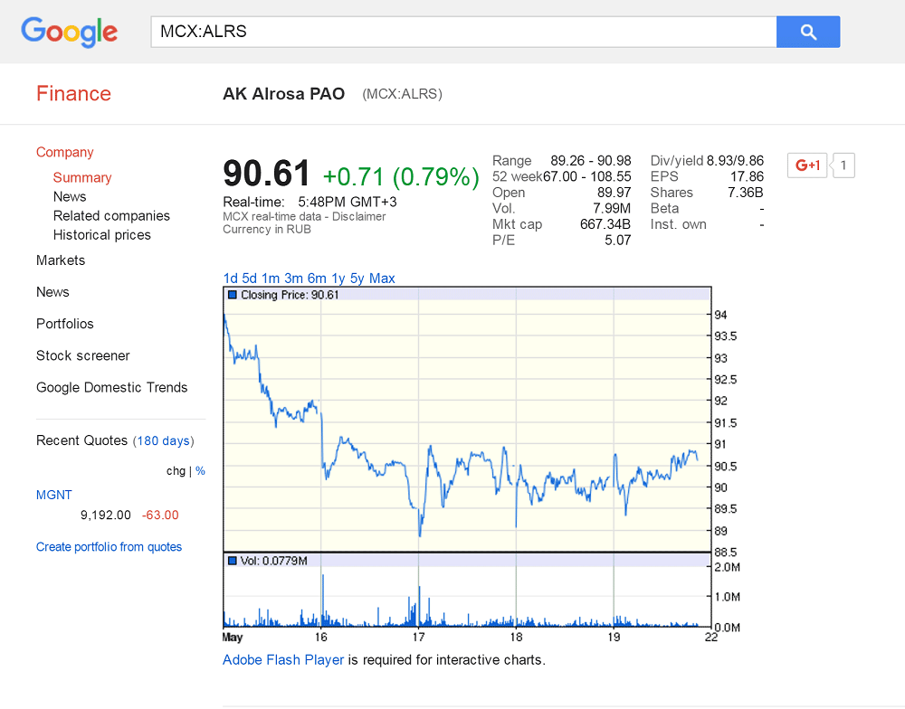
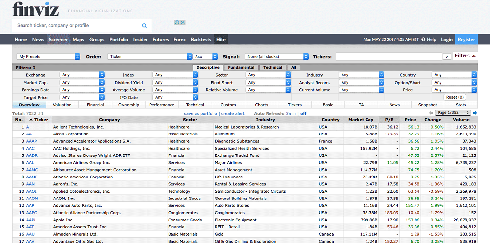

Спекуляции — это когда инвестор зарабатывает на сиюминутных колебаниях цен. Это опасная работа: спекулянт вынужден постоянно следить за рынком, работать с кредитным плечом и сильно рисковать.
Торгую на чужие, отдаю свои Большая часть форексов, бинарных опционов и прочих разрекламированных сервисов подталкивает инвесторов к рискованным спекуляциям: клиент стремительно теряет деньги и выходит из игры, а на его место приходят новые неопытные спекулянты. Если спекулянт не знает матчасть, он гарантированно потеряет деньги.
Это не наш путь. Мы хотим вкладывать разумно и не проводить жизнь у биржевого терминала.
Правила разумного инвестора:
Разумный инвестор — термин из книги инвестора Бенджамина Грэма, учителя Уоррена Баффетта. Вот что он пишет:
«Единственная стратегия инвестирования, которая может обеспечить вам относительную безопасность вложений наряду с доходностью, превышающей доходность рынка, основана на оценке реальной стоимости акций компании».
Оценка стоимости — это и есть основа разумного инвестирования.
Представьте, что у вас есть миллион рублей и вы хотите купить готовый бизнес с максимальной выгодой. Вы не хотите лично заниматься этим бизнесом — пусть он работает сам, а вы будете получать прибыль. Ваши варианты:
| Автомойка | Шаурма | ИТ-стартап | |
|---|---|---|---|
| Стоимость | 500 000 Р | 500 000 Р | 500 000 Р |
| Годовая прибыль | 38 000 Р | 200 000 Р | −22 000 Р |
Очевидно, что покупка ИТ-стартапа сейчас создаст вам только убытки. А если сравнивать автомойку и шаурму, то шаурма выгоднее. Может быть, владеть ИТ-компанией престижнее, чем шаурмой. И, может быть, у ИТ-стартапа какие-то заоблачные перспективы — например, перепродаться за сумму втрое больше. Но это всё соображения другого порядка. Конкретно сейчас с точки зрения денег ИТ-стартап — худшее вложение, а шаурма — лучшее.
Попробуем другой вопрос: акции какой компании выгоднее купить: «М-видео», ФСК ЕЭС или «Твиттер»?
Ответ разумного инвестора: «Сперва мне нужно оценить реальную стоимость этих компаний».
После оценки станет очевидно, что «М-видео» по выгодности похож на автомойку, ФСК ЕЭС — на шаурму, а «Твиттер» — на ИТ-стартап. Именно так соотносятся прибыли компаний с их рыночной стоимостью:
| «М-видео» | ФСК ЕЭС | «Твиттер» | |
|---|---|---|---|
| Стоимость | 69 282 674 686 Р | 248 559 737 997 Р | 13 670 000 000 $ |
| Годовая прибыль | 5 546 000 000 Р | 68 382 000 000 Р | −438 700 000$ |
В примере с шаурмой, автомойкой и ИТ-стартапом у людей не возникает сомнений, что хорошо, а что плохо. Но на фондовой бирже всё не так очевидно. Там мы слышим красивые названия брендов, которые затмевают ум. Приятно инвестировать в «М-видео» или «Твиттер», не очень приятно — в какие-то буквы. Однако есть эмоции, а есть разум. И он говорит, что нужно анализировать отчетность, а не молиться на бренд.
Все публичные компании, которые торгуются на фондовой бирже, обязаны ежеквартально публиковать финансовые результаты. Найти и скачать такой отчет может каждый: либо на одном из специальных сайтов раскрытия информации, как e-disclosure.ru, либо на официальном сайте самой компании в разделе «Информация для инвесторов».
Отчетность «М-видео» на сайте e-disclosure.ru
Отчетность на официальном сайте «М-видео»
Есть два типа отчетов: РСБУ (Российские стандарты бухгалтерского учета) и МСФО (Международные стандарты финансовой отчетности). Форматы отчетов схожи, но МСФО предназначен для инвесторов, а РСБУ — для налоговиков.
Финансовый отчет компании может содержать более 100 страниц — не пугайтесь этого. Вас интересуют только две его формы, по которым вы сможете произвести все необходимые расчеты.
Первая форма — это отчет о финансовом положении компании:
Вторая форма — это отчет о прибылях и убытках:
В финансовых отчетах данные формы всегда находятся по соседству. Глядя на основные цифры — общий долг, собственный капитал, выручку и прибыль — вы поймете реальную оценку компании.
Уже сейчас, глядя на скриншоты отчетности «М-видео», вы можете сказать, есть ли у компании прибыль и каково ее отношение к собственным средствам; какой долг у компании и растет ли он. Вы уже можете сказать, нравится вам бизнес этой компании или нет.
Но данные МСФО — это только половина уравнения. Вторая половина — цена, по которой вы можете купить этот бизнес. Эта цена определяется рыночной капитализацией компании на бирже. Капитализация — это стоимость компании на бирже, то есть цена акции умноженная на их количество.
Представьте, что после того, как вы купили палатку с шаурмой, вы сделали IPO, то есть вышли со своей компанией на биржу. Вы как бы разрешили всем участникам биржи купить акции вашей палатки.
Вот как это может выглядеть:
| ПАО «Шаурма» | Выход на IPO | Через 1 год | Через 5 лет |
|---|---|---|---|
| Годовая прибыль | 200 000 Р | 200 000 Р | 200 000 Р |
| Стоимость акции | 100 Р | 300 Р | 1000 Р |
| Число акций | 5000 шт. | 5000 шт. | 5000 шт. |
| Капитализация | 500 000 Р | 1 500 000 Р | 5 000 000 Р |
| Капитализация / прибыль | 2,5 | 7,5 | 25 |
На IPO вы вышли с 5000 акций, каждая из которых стоила 100 рублей. Капитализация компании составила 500 000 рублей — это ровно та сумма, за которую вы и сами ее купили.
Вы опубликовали данные своего финансового отчета, и все инвесторы увидели, какая у вас классная компания, которая окупает себя за каких-то 2,5 года. Все начали покупать акции вашей шаурмы, и те начали расти в цене. Через год акции стоят уже 300 рублей. При этом палатка с шаурмой приносит всё те же 200 000 рублей в год.
Хотя прибыль не изменилась, капитализация выросла в 3 раза. Теперь она 300 × 5000 = 1,5 млн рублей. Получается, что бизнес окупает себя уже за 7,5 лет. Стоит ли покупать акции?
Проходит 5 лет, вы делаете презентации новой «Ай-шаурмы», и акции шаурмы взлетают до 1000 рублей за штуку. Но прибыль по-прежнему 200 000 в год, хотя капитализация уже 5 млн рублей. Хотели бы вы теперь купить бизнес ценой в 5 000 000 рублей и прибылью 200 000 рублей в год?
Разумный инвестор ищет и покупает только те компании, чьи акции недооценены рынком.
Капитализацию всех российских публичных компаний вы можете найти на сайте Московской биржи.
Всё логично и понятно, однако, изучая одну компанию, мы потратили много времени, а их на Московской бирже более 250. В США — еще десять тысяч. Еще непонятно, как сравнивать компании между собой, если у них капитализация может отличаться на несколько порядков. Тут нам помогут мультипликаторы.
Мультипликаторы — производные показатели, которые отражают соотношение между финансовыми результатами компании (прибыль, выручка, долги, активы) и ее капитализацией.
Вы уже видели мультипликаторы нашей шаурмы.
Мультипликаторы ПАО «Шаурма»
| ПАО «Шаурма» | Выход на IPO | Через 1 год | Через 5 лет |
|---|---|---|---|
| Годовая прибыль | 200 000 Р | 200 000 Р | 200 000 Р |
| Стоимость акции | 100 Р | 300 Р | 1000 Р |
| Число акций | 5000 шт. | 5000 шт. | 5000 шт. |
| Капитализация | 500 000 Р | 1 500 000 Р | 5 000 000 Р |
| Капитализация / прибыль | 2,5 | 7,5 | 25 |
Теперь, сравнивая другие компании, мы можем легко выбрать лучшую, ориентируясь только на отношение капитализации к прибыли.
Какую компанию выберете?
| Компания | Капитализация / прибыль |
|---|---|
| «М-видео» | 12,49 |
| Автосалон | 12 |
| ФСК ЕЭС | 3,63 |
| Шаурма | 2,5 |
| ИТ-стартап | −22 |
| «Твиттер» | −31,16 |
Лучший мультипликатор — у шаурмы.
Сейчас мы оцениваем бизнес по мультипликатору P/E (price / earnings). Это самый популярный мультипликатор, хотя он и не отражает всей информации о здоровье компании. Существует всего около 10 основных мультипликаторов, просмотрев которые вы фактически сможете не просто сравнить десятки компаний, но и принять грамотные решения. Обо всех этих мультипликаторах поговорим отдельно.
Если мы не рассчитываем мультипликаторы самостоятельно, их нужно где-то брать. Для этого боги финансов послали нам специальные сервисы.
Строго говоря, некорректно сравнивать мультипликаторы принципиально разных компаний — той же шаурмы и «Твиттера». Компании могут переживать разные этапы жизненного цикла, находиться в разных экономических условиях, испытывать разные политические риски или вообще иметь принципиально разную экономику. Поэтому нельзя огульно обобщать, что шаурма как бизнес лучше «Твиттера».
Например, есть две компании — «Роснефть» и «Транснефть». Обе компании вроде про нефть, но одна нефть добывает, другая транспортирует. Это принципиально разные бизнесы с разной экономикой. Политические риски в каждом случае тоже принципиально разные. Поэтому просто отсортировать компании по P/E и выбрать что-то снизу — по меньшей мере слишком упрощенно.
Но для начала — уже неплохо.
Есть много платных и бесплатных сервисов для поиска недооцененных компаний.
Вот по каким критериям их выбирать:
Какие представлены компании. Торгуя на Московской бирже акциями российских компаний, ищите те сервисы, которые дадут вам мультипликаторы по всем компаниям, а не только по самым ликвидным и популярным.
Мультипликаторы. Одного P/E недостаточно. Ищите сервисы, где будут мультипликаторы P/E, P/BV, P/S EV/S, EV/EBITDA, Долг/EBITDA, рост EPS, ROE. Подробно про каждый мультипликатор можно узнать в нашей статье. Дополнительным преимуществом будут рассчитанные мультипликаторы за предыдущие периоды.
Удобство поиска недооцененных акций. Важно, чтобы у сервиса были инструменты фильтрации компаний по мультипликаторам.
Самый доступный сервис — «Гугл-финанс». Он охватывает огромный объем данных, однако в этом же и его недостаток: данные поверхностные, особенно для российских компаний.
Дело в том, что нет какой-то единой электронной базы с финансовыми показателями российских компаний. Чтобы рассчитать мультипликаторы, владельцам платных сервисов приходится нанимать людей, которые ходят по отчетности, вручную собирают данные и забивают их в базу данных сервиса. Гугл не работает по такому пути, а поэтому количество и качество данных у сервиса ограничены.
«Гугл-финанс»: данные обрывочные
 Карточка компании в «Гугл-финансе»Для разумного инвестора в этой карточке не очень много информации. В основном тут представлены рыночные данные: количество акций (shares), цена открытия (open), капитализация (Mkt. cap). Нам же в первую очередь интересен показатель P/E, который мы уже рассмотрели. Однако одного его недостаточно для анализа.
Специализированные платные сервисы в этом плане далеко впереди. Они могут позволить себе рассчитывать все данные. Главный игрок на этом рынке — компания finviz.com, которая дает огромный набор данных платно и бесплатно. К сожалению, данных по акциям российских компаний сервис не дает.
Сервис «Финвиз» — океан хороших данных, но российских компаний там нет
На российском рынке среди платных сервисов есть financemarker.ru — это аналог «Финвиза». Еще есть сервис финансовой энциклопедии conomy.ru.
Какой бы сервис для инвестиций вы ни выбрали, теперь ваша задача — найти с помощью него 8—12 недооцененных акций и купить их равными долями в свой портфель. Корректировки портфеля достаточно проводить один раз в квартал или даже раз в полгода — после публикаций новых финансовых отчетов.
Как конкретно искать недооцененные компании, расскажу в следующей статье. А пока небольшое упражнение.
Для таблицы ниже я взял по две публичные компании из разных отраслей бизнеса. Разница между ними в том, что про первые вы наверняка слышали, а про вторые нет. «Роснефть», «Русгидро» и другие — одни из крупнейших компаний в России, самые торгуемые и популярные компании на бирже среди инвесторов. Вторыми в списке идут компании с гораздо меньшей капитализацией, но тоже крупные, а главное, прибыльные.
По всем компаниям я рассчитал P/E на основе их годовых отчетов за 2016 год.Посмотрите, всегда ли стоит вестись на бренды.
| Отрасль | Компания | Капитализация, млрд Р | P/E |
|---|---|---|---|
| Фармацевтика | «Протек» | 52,556 | 8,6 |
| «Отисифарм» | 26,103 | 4,21 | |
| Электроэнергетика | «Русгидро» | 358,059 | 9,01 |
| МРСК Волги | 10,835 | 3,86 | |
| Телеком | «Мегафон» | 361,46 | 14,13 |
| МГТС | 76,702 | 5,85 | |
| Металлы и добыча | «Норникель» | 1572,169 | 9,39 |
| «Лензолото» | 11,238 | 4,37 | |
| Банки | ВТБ | 959 | 18,6 |
| Банк «Санкт-Петербург» | 29,45 | 6,88 | |
| Торговля | «Магнит» | 1012,752 | 18,61 |
| ОМПК | 4,16 | 4,48 | |
| Химпром | «Уралкалий» | 486,791 | 5,13 |
| «Казаньоргсинтез» | 75,513 | 4,2 |